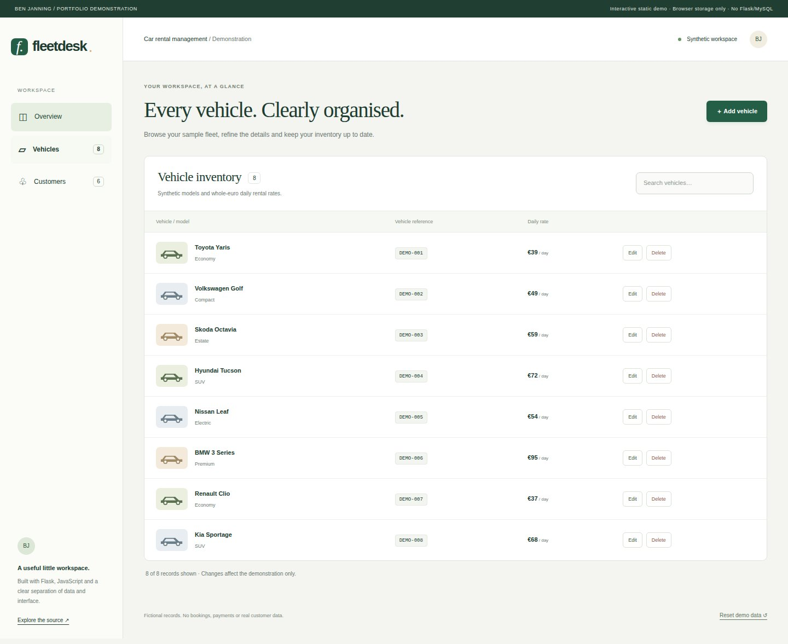
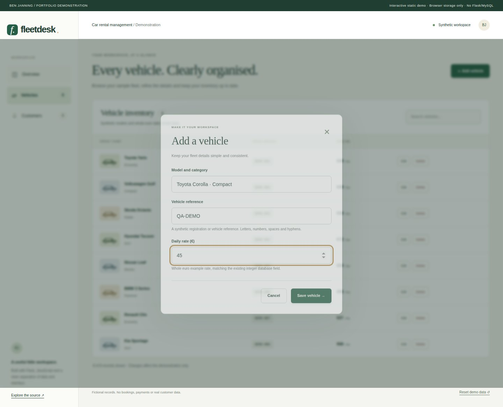
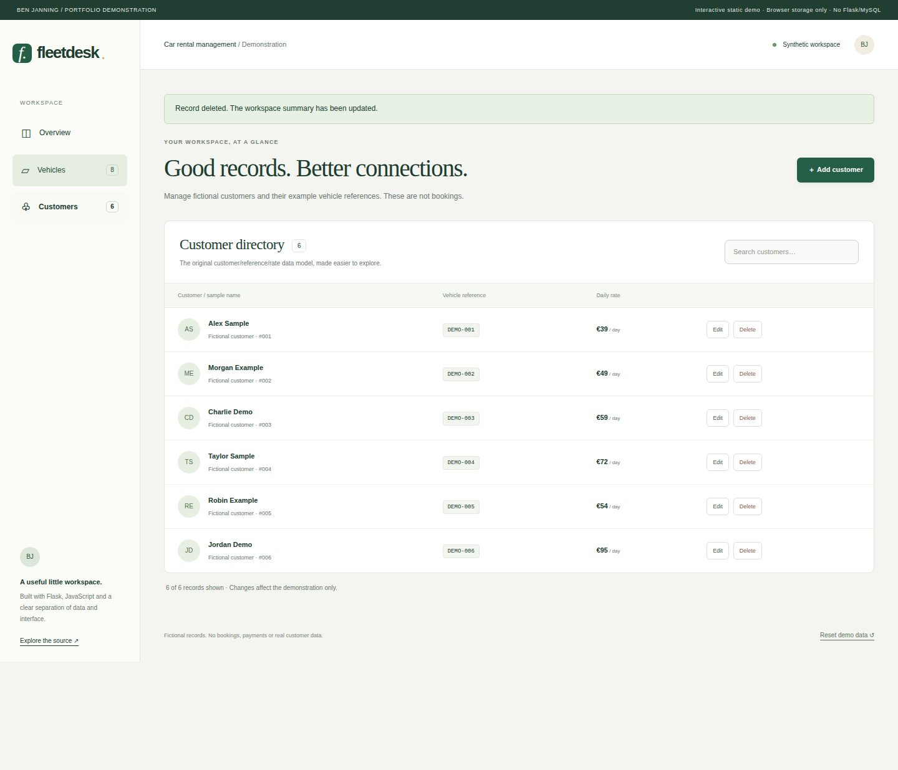
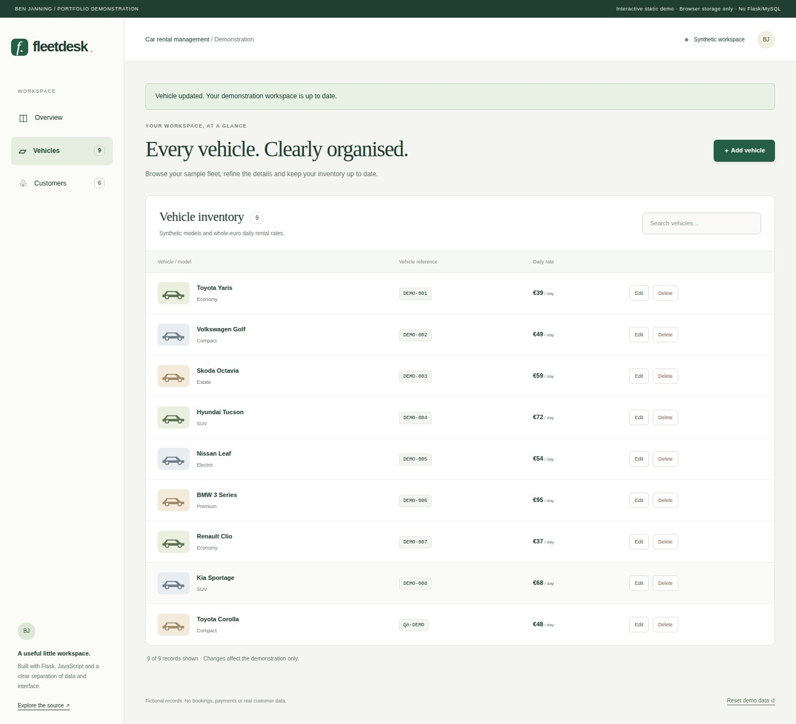

Car rental management.
A polished workspace for vehicle inventory and customer records, with a tested Flask API and an explicitly static public demonstration.

What I built
Developed the original Flask/MySQL coursework into a practical record-management dashboard with a shared browser demonstration.
Why it matters
Everyday record management depends on clear workflows and consistent data. This prototype brings the interface, API and storage responsibilities together.
How it works
- 01
Browse synthetic vehicles and customers, with summaries calculated from current records.
- 02
Create, search, edit and delete records with clear validation, cancellation and confirmation.
- 03
Reset the sample workspace, or run the same frontend against the local Flask API and optional MySQL store.
What it demonstrates
Full-stack development, REST endpoints, relational data access and translating a record-management requirement into a usable interface.
Evidence, with context.
Automated API, authentication, MySQL integration and browser workflow checks are required before a release package is published. The source-linked verification run records the actual result for this revision.
Verified source: 2cd4db2b38b7 · Tests and visual capture ↗








Scope and limitations
All public records are synthetic and stored in the browser. The demo does not run Flask/MySQL, create real rentals, process payments or model fleet availability. Customer vehicle references are descriptive records rather than enforced reservations. Multi-user concurrency and production access controls are outside this educational prototype.
Visual provenance and source attribution are recorded in the evidence register ↗.
Under the surface.
Architecture, methods and improvements
One frontend uses a Flask REST adapter or a browser-storage adapter. Existing /cars and /customer routes and integer Price fields are preserved; Price is presented as a whole-euro example daily rate. The MySQL adapter uses bounded pooled connections, parameterized queries, rollback and cleanup. Writes reject duplicate references/pairs and cross-origin requests. Tests cover both adapters, reset, failures and mobile layout.
Try it locally
Install requirements.txt, set DEMO_MODE=1 and run python CarServer.py. Open http://127.0.0.1:5000. See the README for MySQL configuration and opt-in disposable integration tests.
The portfolio is a static GitHub Pages site. Server applications run locally; the portfolio does not collect bookings, credentials or payments.